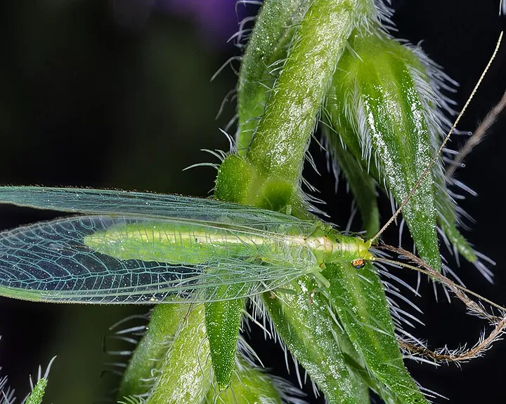
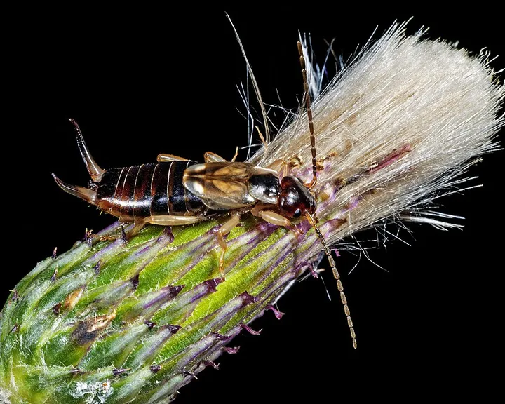

Gemeine Wespe
Vespula vulgaris
Teils Nützling1,2–2 cmtagaktiv
Obst & GehölzHaus & MauerBlüten
Gelb-schwarz mit Wespentaille: Die Arbeiterinnen jagen Insekten und kommen im Spätsommer gern an den Kaffeetisch. Im August und September suchen die Arbeiterinnen besonders eifrig nach Süßem.
So erkennst du die Gemeine Wespe
- Gelb-schwarzer Hinterleib mit schmaler Wespentaille
- Lange, geknickte Fühler, kaum behaart
- Vier Flügel, in Ruhe längs gefaltet
Auch zu finden unter: Gelb-schwarz gestreift
Wann ist die Gemeine Wespe zu sehen?
kaum zu sehenaktivbeste Zeit
Aktiv: April, Mai, Juni, Juli, August, September und Oktober. Hauptzeit: August und September.
Die Gemeine Wespe ist von April bis Oktober zu sehen. Besonders viel los ist im August und September. Im August und September suchen die Arbeiterinnen besonders eifrig nach Süßem.
Lebensweise
Was frisst die Gemeine Wespe?
Ihre Larven füttert sie mit zerkauten Insekten wie Fliegen und Raupen. Die Arbeiterinnen selbst leben von Süßem: Nektar, reifem Obst und Honigtau.
Ein Volk für einen Sommer
Nur die jungen Königinnen überwintern. Das Nest aus papierartigem Material wird im Herbst verlassen und nicht wieder bezogen.
Gut zu wissen
Wespen stechen nur, wenn sie sich bedroht fühlen. Hektisches Schlagen und Pusten macht sie erst recht nervös.
Gut miteinander leben
Gläser abdecken, mit Strohhalm trinken und Fallobst einsammeln. Ein Nest darf nicht einfach zerstört werden. Stört es wirklich, berät die Naturschutzbehörde oder ein Fachbetrieb.
Beobachtungstipp
An einem verwitterten Holzzaun lauschen: Dort schaben Wespen hörbar Holzfasern für ihr Nest ab.
Passend dazu
- Beispielfoto · Foto: Michel Helmecke, CC BY-SA 2.0 de – Lizenzangaben im Bildnachweis
 Mein Tipp
Mein TippBecherlupe mit Vergrößerung
Auswahl bei Amazon
Insekten kurz einfangen, genau ansehen und wieder freilassen. Ideal auch für Kinder.
Bei Amazon ansehen Becherlupe mit Vergrößerung (Werbelink, öffnet in neuem Fenster) - Beispielfoto · Foto: U.S. Fish and Wildlife Service Southeast Region, Public domain – Lizenzangaben im Bildnachweis

Bestimmungsbuch Tiere im Garten
Auswahl bei Amazon
Ein handliches Buch mit Fotos hilft, auch seltenere Besucher sicher zu erkennen.
Bei Amazon ansehen Bestimmungsbuch Tiere im Garten (Werbelink, öffnet in neuem Fenster)
Werbelink: Wenn du über diesen Link etwas kaufst, erhält der Gartentierkompass eine kleine Provision von Amazon. Für dich ändert sich am Preis nichts. Als Amazon-Partner verdiene ich an qualifizierten Verkäufen.
Nicht verwechseln: Hainschwebfliege
Schwebfliegen haben nur zwei Flügel und keine Taille. Sie stehen in der Luft und stechen nicht.
Foto: Alvesgaspar (Quelle, öffnet in neuem Fenster), CC BY-SA 3.0 (Lizenztext, öffnet in neuem Fenster), Wikimedia Commons
Hainschwebfliege oder Gemeine Wespe? Alle Unterschiede · Hainschwebfliege im Porträt
Wird auch verwechselt mit: Hornisse
Mehr erfahren
- Wikipedia: Gemeine Wespe (öffnet in neuem Fenster)
- Beobachtungen bei iNaturalist (öffnet in neuem Fenster)
- Vögel im Garten im Vogelkompass
Von Nico Schober · Stand: 19. November 2026 · Angaben abgeglichen mit Wikipedia und gängiger Bestimmungsliteratur
Oft in der Nähe
-
 tagaktivnachtaktiv
tagaktivnachtaktivGartenkreuzspinne
NützlingDie Spinne mit dem weißen Kreuz auf dem Rücken und den großen Radnetzen zwischen Sträuchern.
-
 tagaktiv
tagaktivAsiatischer Marienkäfer
Teils NützlingEingeschleppter Marienkäfer mit wechselndem Kleid: gelb, orange oder schwarz, mit null bis neunzehn Punkten.
-

nachtaktivFlorfliege
NützlingZartes, hellgrünes Insekt mit goldenen Augen und durchsichtigen Flügeln, das nachts ans Licht fliegt.
-

nachtaktivGemeiner Ohrwurm
NützlingBrauner Nachtjäger mit Zange am Hinterleib. Er kriecht weder in Ohren noch kneift er ernsthaft.